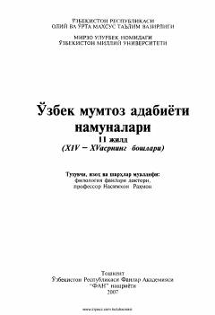

OMXIV—XV asrlar Oltin O'rda davri o'zbek mumtoz adabiyoti namunalarining ilmiy-izohli nashri.
Mazkur nashrda XIV—XV asrlar Oltin O'rda va Temuriylar davri o'zbek mumtoz adabiyoti namunalari, jumladan Sayfi Saroyi, Xorazmiy, Xo'jandiy va boshqa shoirlarning asarlari ilmiy izohlar bilan jamlangan. Kitob matnlarni qo'lyozmalar asosida qiyosiy o'rganish, qisqartirishlarni tiklash va talabalarga mukammal manba taqdim etish maqsadida tayyorlangan. Asar o'quvchilarga o'zbekmumtoz adabiyoti tarixi va janrlari haqida atroflicha ma'lumot beradi.